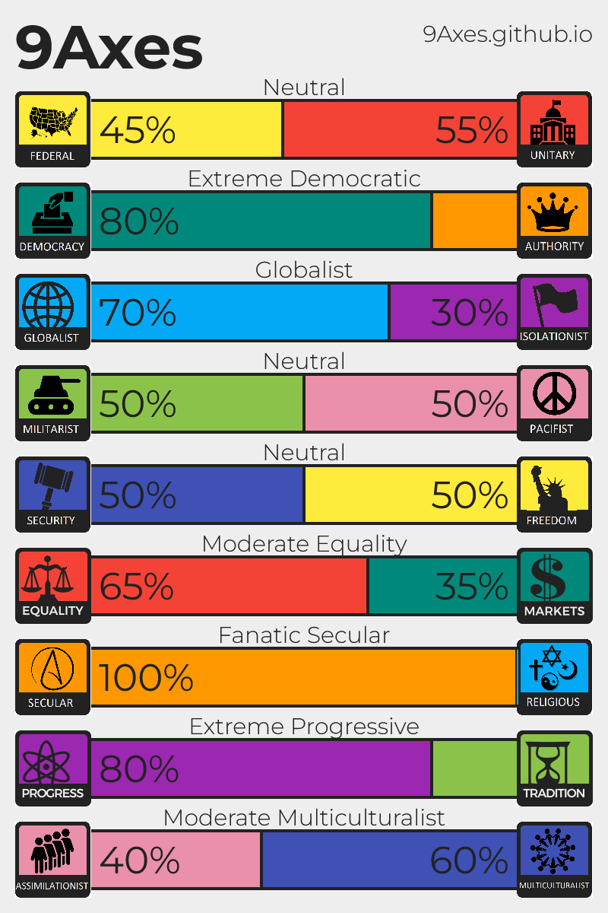

Real Websites
By Real People
9 Values
- Progress vs. Tradition
- Federal vs. Unitary
- Democracy vs. Authority
- Secular vs. Religious
- Assimilationist vs. Multiculturalist
- Globalist vs. Isolationist
- Equality vs. Markets
- Militarist vs. Pacifist
- Security vs. Freedom
Example:
